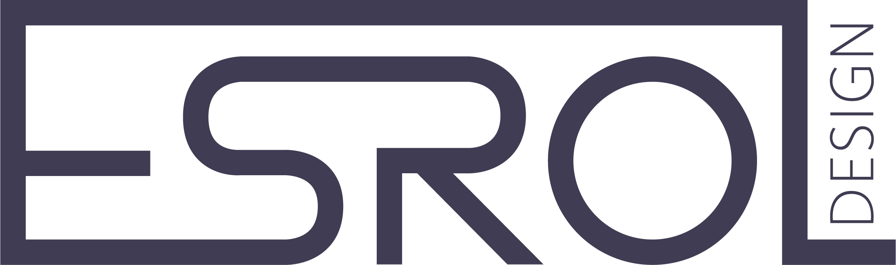
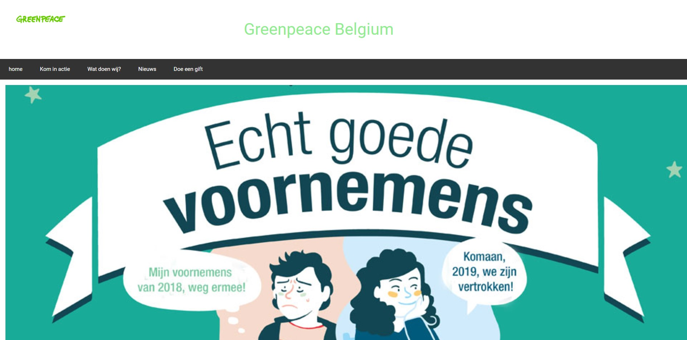
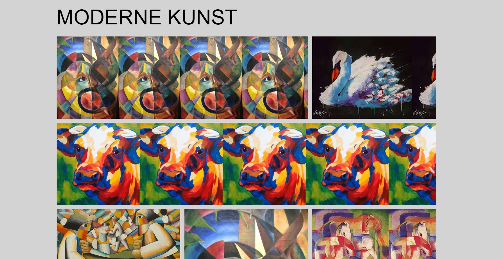
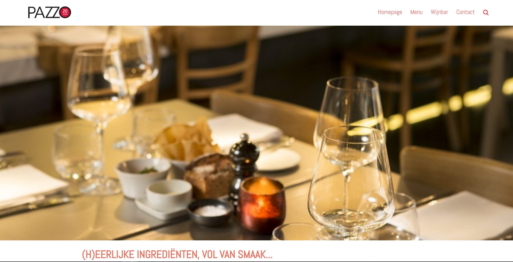
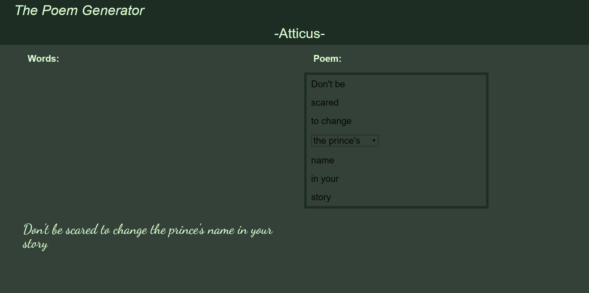

Contact
Projecten
Over mezelf
Home
ILLUSTRATIE
WEBDESIGN
FOTOGRAFIE
PHOTOSHOP
VIDEO-ANIMATIE
GRAFISCH DESIGN
WEBDESIGN
Klik op een foto om de website te bezoeken!
testt
Een wordpress website als opdracht voor webmediaproductie: redesign een website.

Voor Informatietechnologie moesten we een website nabouwen aan de hand van CSS en HTML.

Een opdracht voor Informatietechnologie waar we verschillende animaties moesten uitproberen.

Voor het vak webmediaproductie moesten we een website van een restaurant redesignen.

Een poem generator die we moesten maken voor informatietechnologie 3
Een wordpress webwinkel die we moesten bouwen voor het vak webmediaproductie.